Change analysis for Cuba for PRIMAP-hist v2.5.1_final compared to
v2.5_final
Overview over
emissions by sector and gas
The following figures show the aggregate national total emissions
excluding LULUCF AR6GWP100 for the country reported priority scenario.
The dotted linesshow the v2.5_final data.
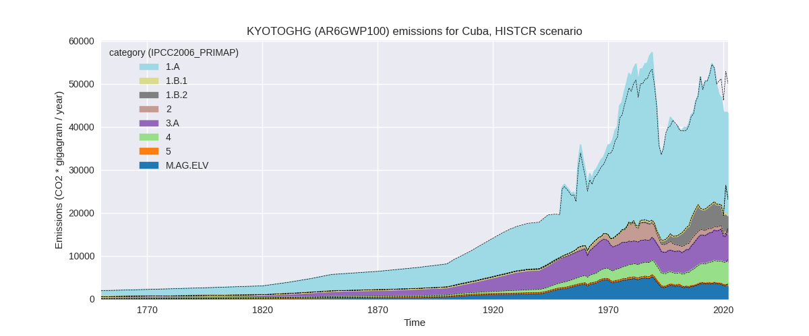
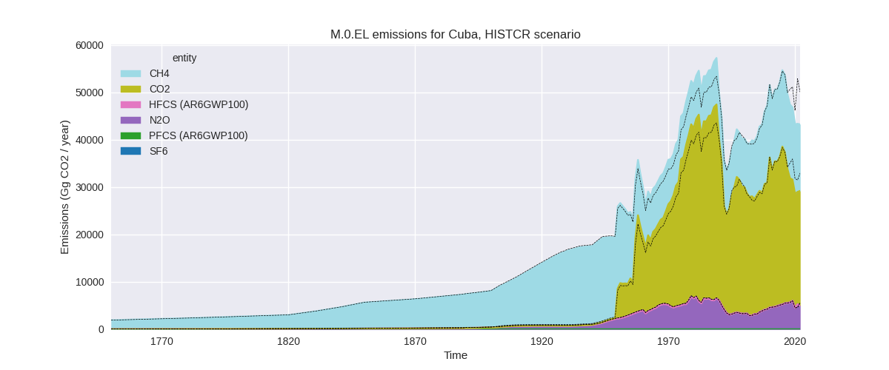
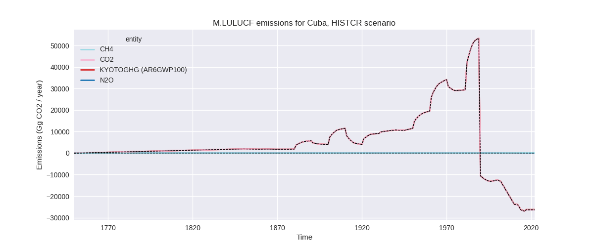
The following figures show the aggregate national total emissions
excluding LULUCF AR6GWP100 for the third party priority scenario. The
dotted linesshow the v2.5_final data.
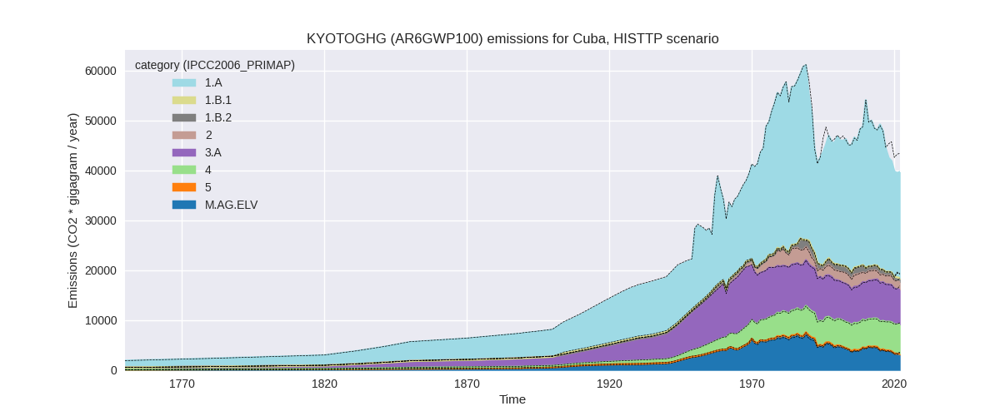
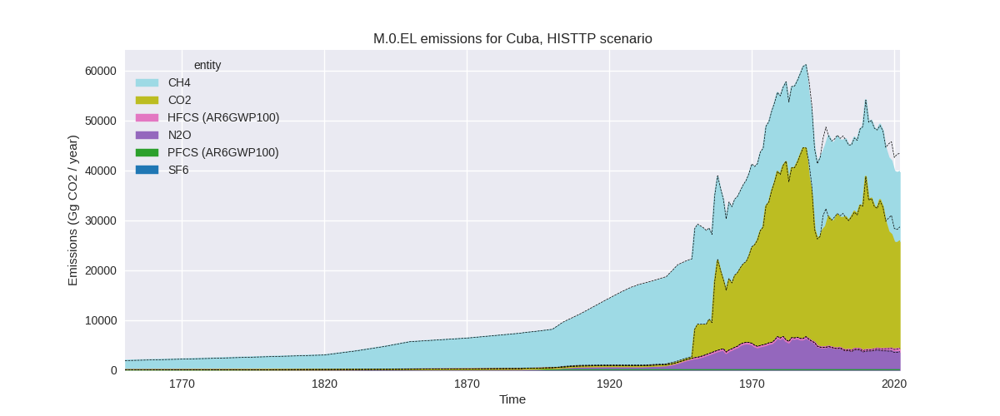
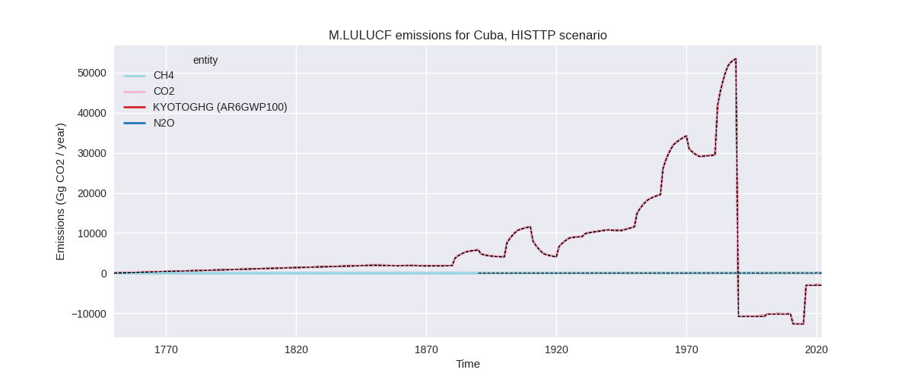
Overview over changes
In the country reported priority scenario we have the following
changes for aggregate Kyoto GHG and national total emissions excluding
LULUCF (M.0.EL):
- Emissions in 2022 have changed by -13.6%% (-6799.41 Gg CO2 / year)
- Emissions in 1990-2022 have changed by -1.7%% (-757.24 Gg CO2 / year)
In the third party priority scenario we have the following changes
for aggregate Kyoto GHG and national total emissions excluding LULUCF
(M.0.EL):
- Emissions in 2022 have changed by -8.6%% (-3717.99 Gg CO2 / year)
- Emissions in 1990-2022 have changed by -2.0%% (-938.89 Gg CO2 / year)
Most
important changes per scenario and time frame
In the country reported priority scenario the
following sector-gas combinations have the highest absolute impact on
national total KyotoGHG (AR6GWP100) emissions in 2022
(top 5):
- 1: 1.A, CO2 with -3111.76 Gg CO2 / year (-11.6%)
- 2: 1.B.2, CH4 with -2514.14 Gg CO2 / year (-38.6%)
- 3: 3.A, N2O with -339.11 Gg CO2 / year (-16.3%)
- 4: 4, CH4 with -253.92 Gg CO2 / year (-4.8%)
- 5: M.AG.ELV, N2O with -236.84 Gg CO2 / year (-7.9%)
In the country reported priority scenario the
following sector-gas combinations have the highest absolute impact on
national total KyotoGHG (AR6GWP100) emissions in
1990-2022 (top 5):
- 1: 1.A, CO2 with -399.19 Gg CO2 / year (-1.5%)
- 2: 1.B.2, CH4 with -277.14 Gg CO2 / year (-7.4%)
- 3: 2, CO2 with -65.55 Gg CO2 / year (-5.0%)
- 4: 3.A, N2O with 9.25 Gg CO2 / year (1.2%)
- 5: 4, CH4 with -7.69 Gg CO2 / year (-0.2%)
In the third party priority scenario the following
sector-gas combinations have the highest absolute impact on national
total KyotoGHG (AR6GWP100) emissions in 2022 (top
5):
- 1: 1.A, CO2 with -2757.23 Gg CO2 / year (-11.6%)
- 2: 3.A, CH4 with -434.19 Gg CO2 / year (-6.0%)
- 3: 1.B.2, CH4 with -218.31 Gg CO2 / year (-29.4%)
- 4: M.AG.ELV, CH4 with -205.35 Gg CO2 / year (-26.9%)
- 5: M.AG.ELV, N2O with -180.73 Gg CO2 / year (-6.8%)
In the third party priority scenario the following
sector-gas combinations have the highest absolute impact on national
total KyotoGHG (AR6GWP100) emissions in 1990-2022 (top
5):
- 1: 1.A, CO2 with -875.54 Gg CO2 / year (-3.4%)
- 2: 2, CO2 with -65.16 Gg CO2 / year (-5.5%)
- 3: M.AG.ELV, CO2 with 65.02 Gg CO2 / year (48.5%)
- 4: 1.B.2, CH4 with -36.77 Gg CO2 / year (-4.4%)
- 5: 3.A, CH4 with -13.96 Gg CO2 / year (-0.2%)
Notes on data changes
Here we list notes explaining important emissions changes for the
country. ’' means that the following text only applies to the TP time
series, while means that it only applies to the CR scenario. Otherwise
the note applies to both scenarios.
- 1.A, CO2: CDIAC 2023 data shows a continued decline
in emissions post 2017 which is not present in the EI 2023 data used in
PRIMAP-hist v2.5. Thus emissions in v2.5.1 are lower for the latest
years. cumulative emissions are only changed slightly.
- 1.B.2, CH4: 2022 emissions are much lower because
EDGAR 7.0 showed a steep increase in emissions in 2021 which is not
present in EDGAR 8.0. Cumulative emissions are impacted as well.
- 3.A, CH4: 2022 emissions are slightly lower than in
v2.5 as FAO 2023 data shows a continued decline in emissions while the
extrapolation used in v2.5 also factored in the emissions increase until
2015 and came to a higher emissions estimate for 2022.
- 2, CO2: Emissions in 2.D (non-energy products from
fuels and solvent use) are much lower in EDGAR 8.0 than in EDGAR 7.0 and
thus emissions in PRIMAP-hist v2.5.1 are lower than in v2.5. As there
are no country reported data for 2.D, CO2 the CR time-series are
affected as well.
- M.AG.ELV, CH4: 2022 emissions are lower because FAO
2023 and EDGAR 8.0 show constant emissions for the recent years while
the extrapolation used for 2022 in v2.5 showed an increase in emissions
due to the higher emissions before 2020.
- M.AG.ELV, CO2: Emissions are higher because EDGAR
8.0 emissions are higher than EDGAR 7.0 emissions.
- M.AG.ELV, N2O: 2022 emissions are lower because FAO
2023 and EDGAR 8.0 show constant emissions for the recent years while
the extrapolation used for 2022 in v2.5 showed an increase in emissions
due to the higher emissions before 2020.
Changes by sector and gas
For each scenario and time frame the changes are displayed for all
individual sectors and all individual gases. In the sector plot we use
aggregate Kyoto GHGs in AR6GWP100. In the gas plot we usenational total
emissions without LULUCF. ## country reported scenario
2022
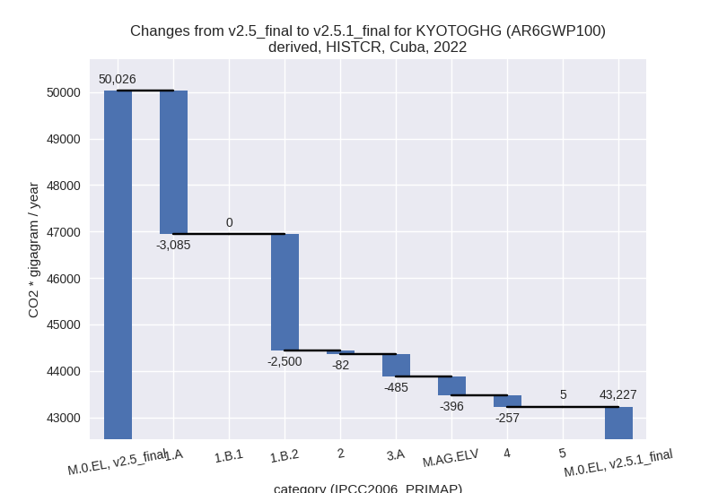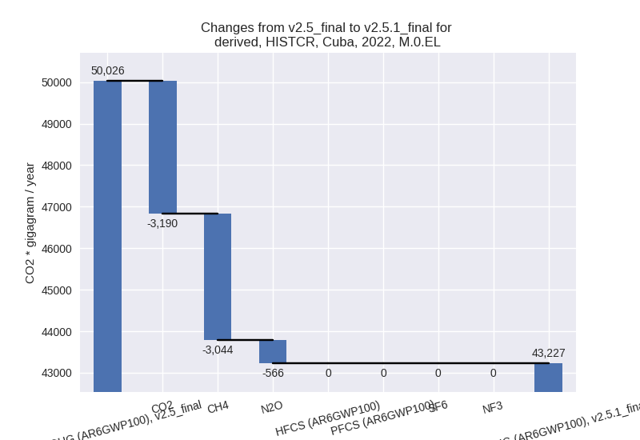
1990-2022
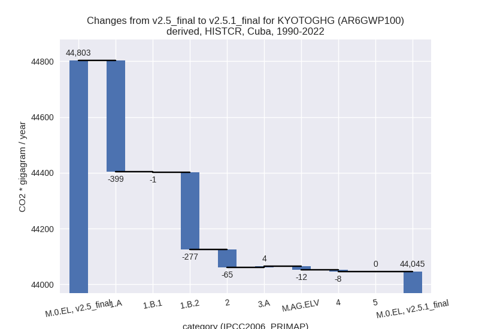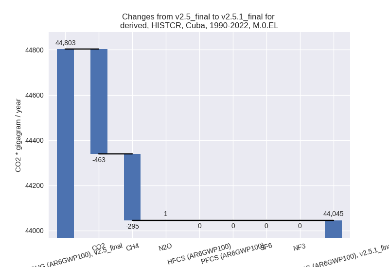
third party scenario
2022
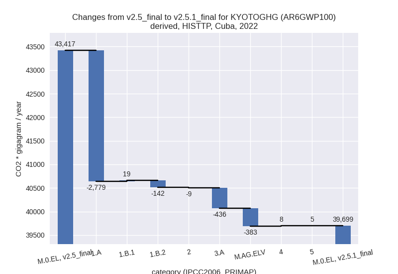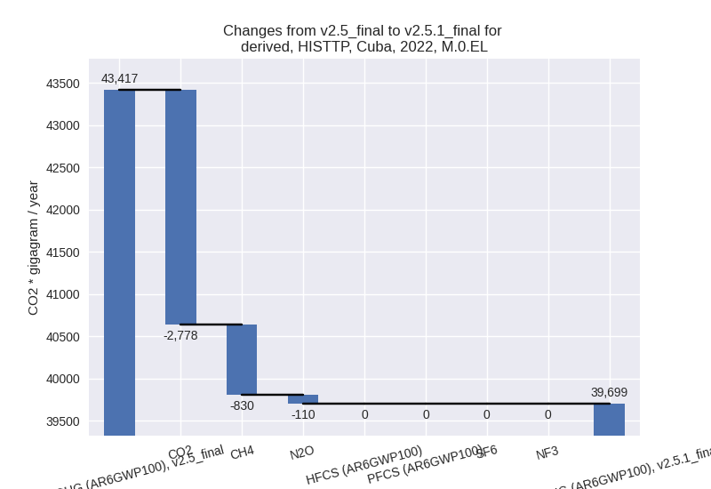
1990-2022
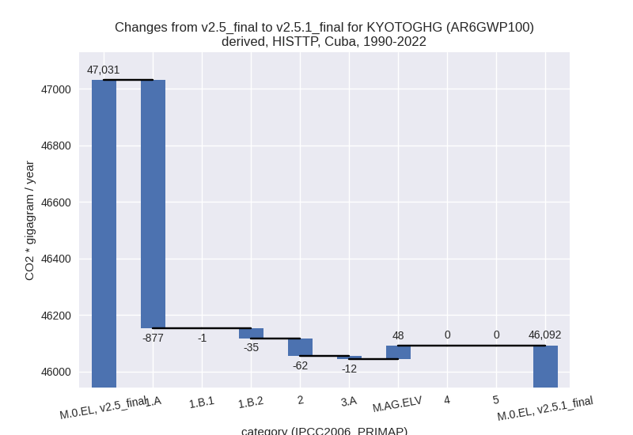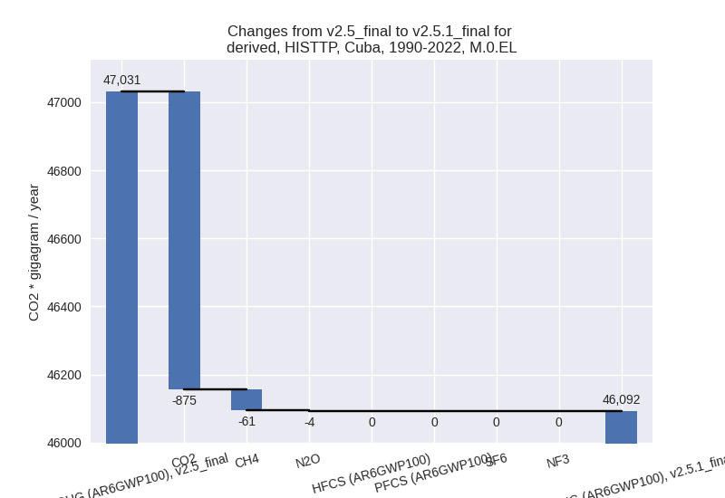
Detailed changes for the
scenarios:
country reported scenario
(HISTCR):
Most important changes
per time frame
For 2022 the following sector-gas combinations have
the highest absolute impact on national total KyotoGHG (AR6GWP100)
emissions in 2022 (top 5):
- 1: 1.A, CO2 with -3111.76 Gg CO2 / year (-11.6%)
- 2: 1.B.2, CH4 with -2514.14 Gg CO2 / year (-38.6%)
- 3: 3.A, N2O with -339.11 Gg CO2 / year (-16.3%)
- 4: 4, CH4 with -253.92 Gg CO2 / year (-4.8%)
- 5: M.AG.ELV, N2O with -236.84 Gg CO2 / year (-7.9%)
For 1990-2022 the following sector-gas combinations
have the highest absolute impact on national total KyotoGHG (AR6GWP100)
emissions in 1990-2022 (top 5):
- 1: 1.A, CO2 with -399.19 Gg CO2 / year (-1.5%)
- 2: 1.B.2, CH4 with -277.14 Gg CO2 / year (-7.4%)
- 3: 2, CO2 with -65.55 Gg CO2 / year (-5.0%)
- 4: 3.A, N2O with 9.25 Gg CO2 / year (1.2%)
- 5: 4, CH4 with -7.69 Gg CO2 / year (-0.2%)
Changes in the main sectors for aggregate KyotoGHG (AR6GWP100)
are
- 1: Total sectoral emissions in 2022 are 27852.77 Gg
CO2 / year which is 64.4% of M.0.EL emissions. 2022 Emissions have
changed by -16.7% (-5584.98 Gg CO2 /
year). 1990-2022 Emissions have changed by -2.2% (-676.89 Gg CO2 / year). For 2022
the changes per gas
are:
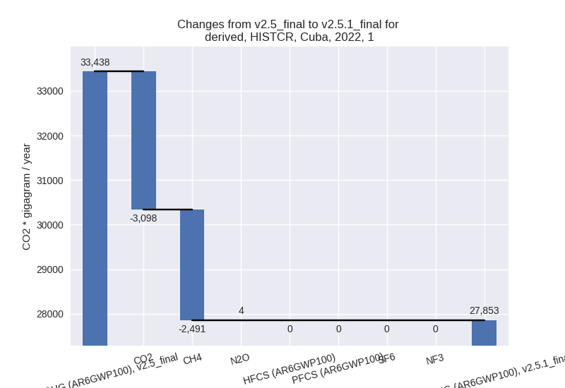
For 1990-2022 the changes per gas
are:
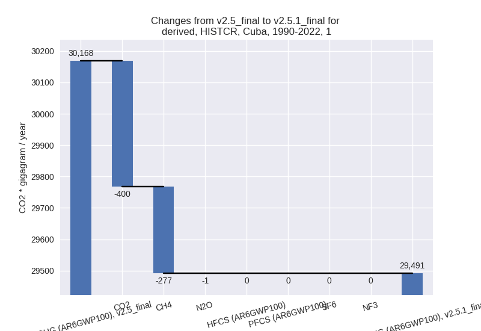
The changes come from the following subsectors:
- 1.A: Total sectoral emissions in 2022 are 23830.32
Gg CO2 / year which is 85.6% of category 1 emissions. 2022 Emissions
have changed by -11.5% (-3085.48 Gg
CO2 / year). 1990-2022 Emissions have changed by -1.5% (-399.22 Gg CO2 / year). For 2022
the changes per gas
are:
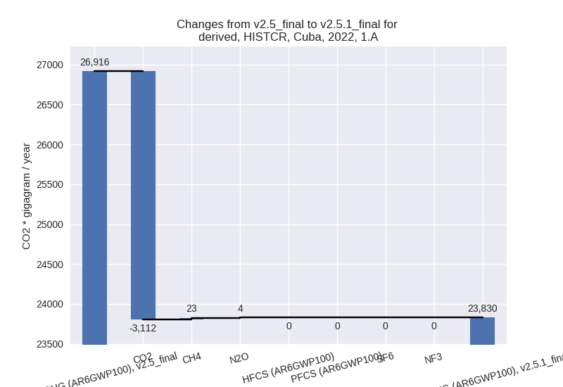
There is no subsector information available in PRIMAP-hist.
- 1.B.1: Total sectoral emissions in 2022 are 2.44 Gg
CO2 / year which is 0.0% of category 1 emissions. 2022 Emissions have
changed by 11.2% (0.25 Gg CO2 /
year). 1990-2022 Emissions have changed by -31.6% (-0.97 Gg CO2 / year). For 2022 the
changes per gas
are:
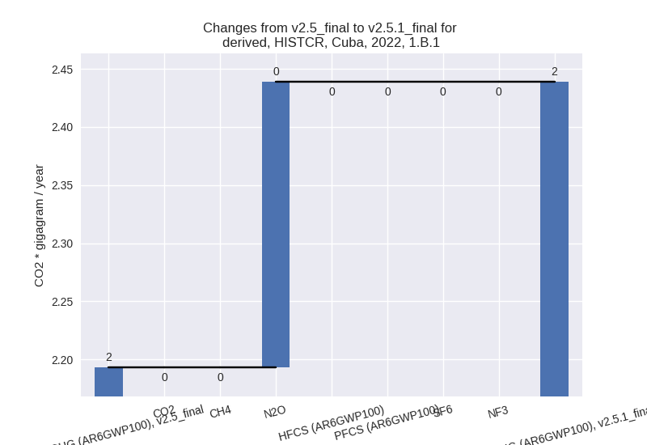
For 1990-2022 the changes per gas
are:
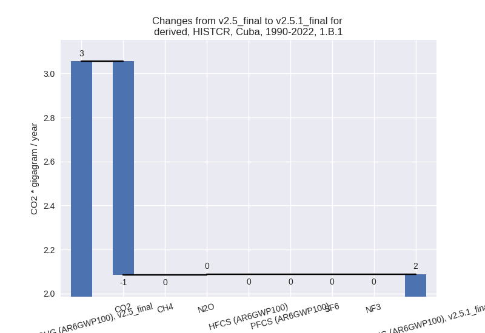
There is no subsector information available in PRIMAP-hist.
- 1.B.2: Total sectoral emissions in 2022 are 4020.01
Gg CO2 / year which is 14.4% of category 1 emissions. 2022 Emissions
have changed by -38.3% (-2499.75 Gg
CO2 / year). 1990-2022 Emissions have changed by -7.2% (-276.70 Gg CO2 / year). For 2022
the changes per gas
are:
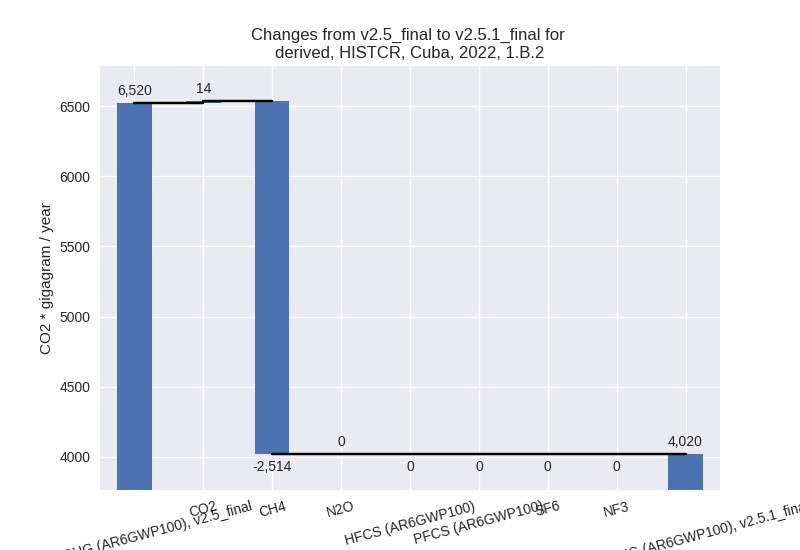
For 1990-2022 the changes per gas
are:
There is no subsector information available in PRIMAP-hist.
- 2: Total sectoral emissions in 2022 are 507.63 Gg
CO2 / year which is 1.2% of M.0.EL emissions. 2022 Emissions have
changed by -14.0% (-82.30 Gg CO2 /
year). 1990-2022 Emissions have changed by -4.5% (-65.46 Gg CO2 / year). For 2022 the
changes per gas
are:
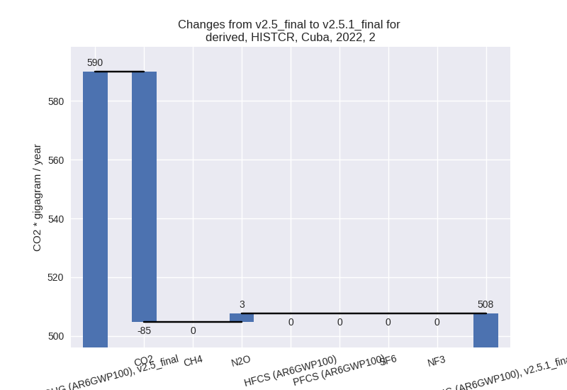
For 1990-2022 the changes per gas
are:
- M.AG: Total sectoral emissions in 2022 are 9389.71
Gg CO2 / year which is 21.7% of M.0.EL emissions. 2022 Emissions have
changed by -8.6% (-880.55 Gg CO2 /
year). 1990-2022 Emissions have changed by -0.1% (-7.26 Gg CO2 / year). For 2022 the
changes per gas
are:
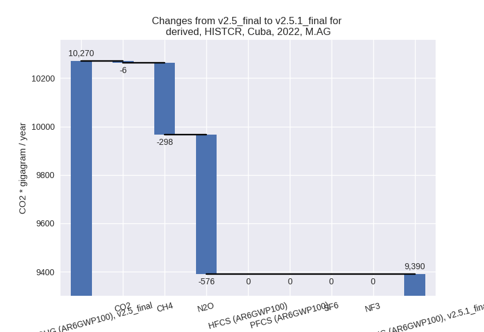
The changes come from the following subsectors:
- 3.A: Total sectoral emissions in 2022 are 6347.30
Gg CO2 / year which is 67.6% of category M.AG emissions. 2022 Emissions
have changed by -7.1% (-484.50 Gg
CO2 / year). 1990-2022 Emissions have changed by 0.1% (4.30 Gg CO2 / year). For 2022 the
changes per gas
are:
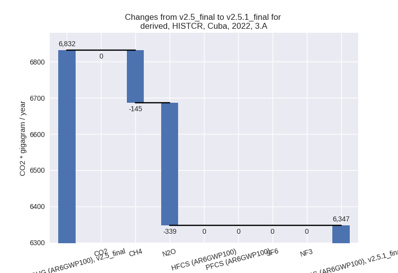
There is no subsector information available in PRIMAP-hist.
- M.AG.ELV: Total sectoral emissions in 2022 are
3042.41 Gg CO2 / year which is 32.4% of category M.AG emissions. 2022
Emissions have changed by -11.5%
(-396.04 Gg CO2 / year). 1990-2022 Emissions have changed by -0.4% (-11.56 Gg CO2 / year). For 2022 the
changes per gas
are:
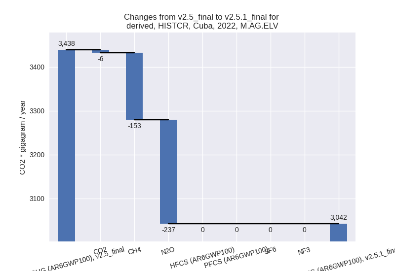
There is no subsector information available in PRIMAP-hist.
- 4: Total sectoral emissions in 2022 are 5289.53 Gg
CO2 / year which is 12.2% of M.0.EL emissions. 2022 Emissions have
changed by -4.6% (-256.80 Gg CO2 /
year). 1990-2022 Emissions have changed by -0.2% (-7.78 Gg CO2 / year). For 2022 the
changes per gas
are:
- 5: Total sectoral emissions in 2022 are 187.10 Gg
CO2 / year which is 0.4% of M.0.EL emissions. 2022 Emissions have
changed by 2.9% (5.22 Gg CO2 /
year). 1990-2022 Emissions have changed by 0.1% (0.16 Gg CO2 / year). For 2022 the
changes per gas
are:
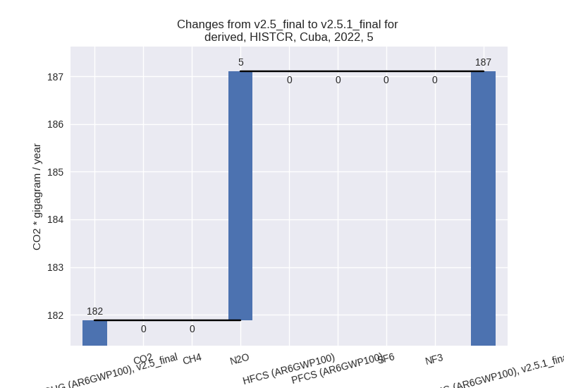
third party scenario (HISTTP):
Most important changes
per time frame
For 2022 the following sector-gas combinations have
the highest absolute impact on national total KyotoGHG (AR6GWP100)
emissions in 2022 (top 5):
- 1: 1.A, CO2 with -2757.23 Gg CO2 / year (-11.6%)
- 2: 3.A, CH4 with -434.19 Gg CO2 / year (-6.0%)
- 3: 1.B.2, CH4 with -218.31 Gg CO2 / year (-29.4%)
- 4: M.AG.ELV, CH4 with -205.35 Gg CO2 / year (-26.9%)
- 5: M.AG.ELV, N2O with -180.73 Gg CO2 / year (-6.8%)
For 1990-2022 the following sector-gas combinations
have the highest absolute impact on national total KyotoGHG (AR6GWP100)
emissions in 1990-2022 (top 5):
- 1: 1.A, CO2 with -875.54 Gg CO2 / year (-3.4%)
- 2: 2, CO2 with -65.16 Gg CO2 / year (-5.5%)
- 3: M.AG.ELV, CO2 with 65.02 Gg CO2 / year (48.5%)
- 4: 1.B.2, CH4 with -36.77 Gg CO2 / year (-4.4%)
- 5: 3.A, CH4 with -13.96 Gg CO2 / year (-0.2%)
Changes in the main sectors for aggregate KyotoGHG (AR6GWP100)
are
- 1: Total sectoral emissions in 2022 are 22050.96 Gg
CO2 / year which is 55.5% of M.0.EL emissions. 2022 Emissions have
changed by -11.6% (-2902.62 Gg CO2 /
year). 1990-2022 Emissions have changed by -3.3% (-912.82 Gg CO2 / year). For 2022
the changes per gas
are:
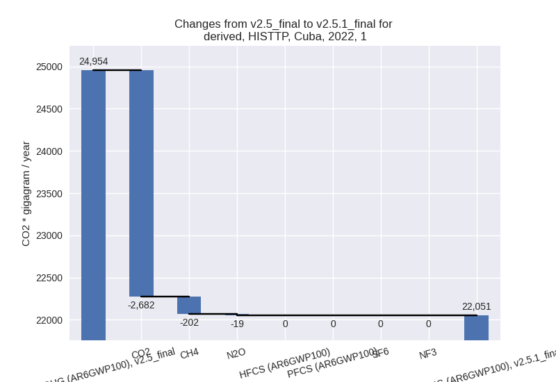
For 1990-2022 the changes per gas
are:
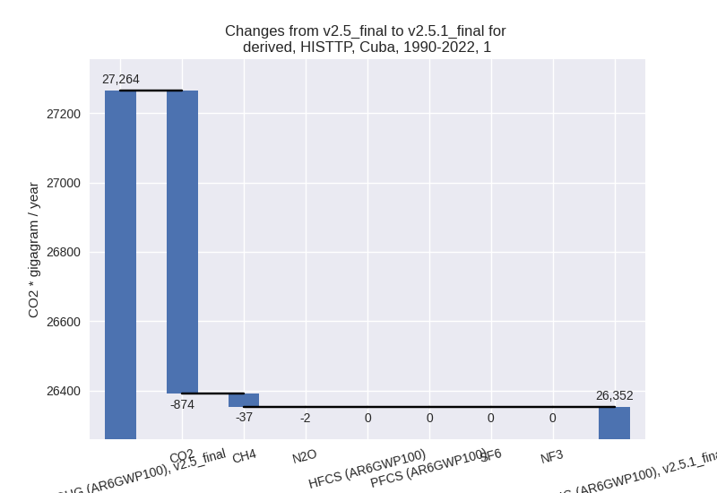
The changes come from the following subsectors:
- 1.A: Total sectoral emissions in 2022 are 21248.93
Gg CO2 / year which is 96.4% of category 1 emissions. 2022 Emissions
have changed by -11.6% (-2779.08 Gg
CO2 / year). 1990-2022 Emissions have changed by -3.4% (-877.47 Gg CO2 / year). For 2022
the changes per gas
are:
For 1990-2022 the changes per gas
are:
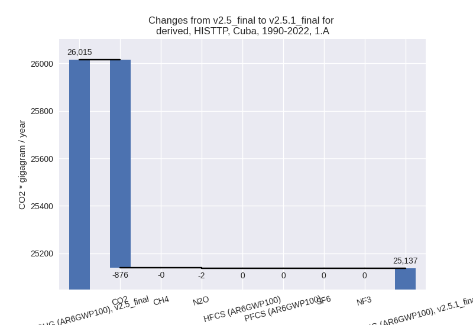
There is no subsector information available in PRIMAP-hist.
- 1.B.1: Total sectoral emissions in 2022 are 186.40
Gg CO2 / year which is 0.8% of category 1 emissions. 2022 Emissions have
changed by 11.2% (18.78 Gg CO2 /
year). 1990-2022 Emissions have changed by -0.4% (-0.63 Gg CO2 / year). For 2022 the
changes per gas
are:
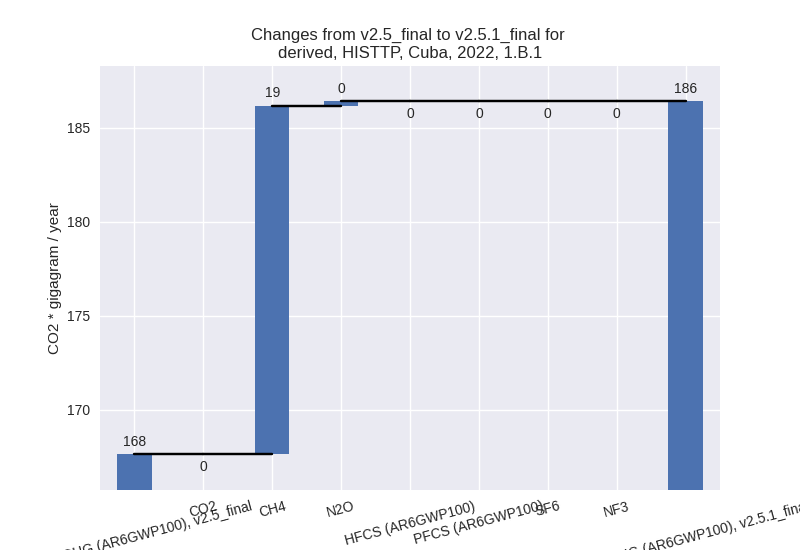
There is no subsector information available in PRIMAP-hist.
- 1.B.2: Total sectoral emissions in 2022 are 615.63
Gg CO2 / year which is 2.8% of category 1 emissions. 2022 Emissions have
changed by -18.8% (-142.31 Gg CO2 /
year). 1990-2022 Emissions have changed by -3.2% (-34.72 Gg CO2 / year). For 2022 the
changes per gas
are:
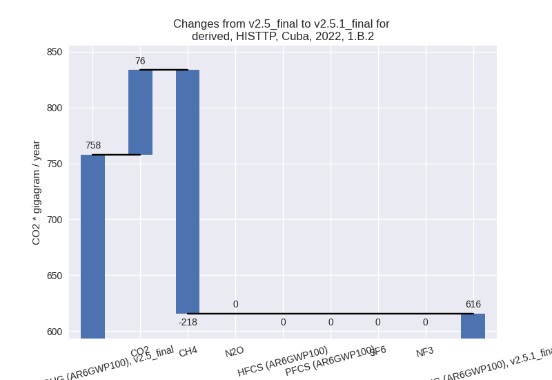
For 1990-2022 the changes per gas
are:
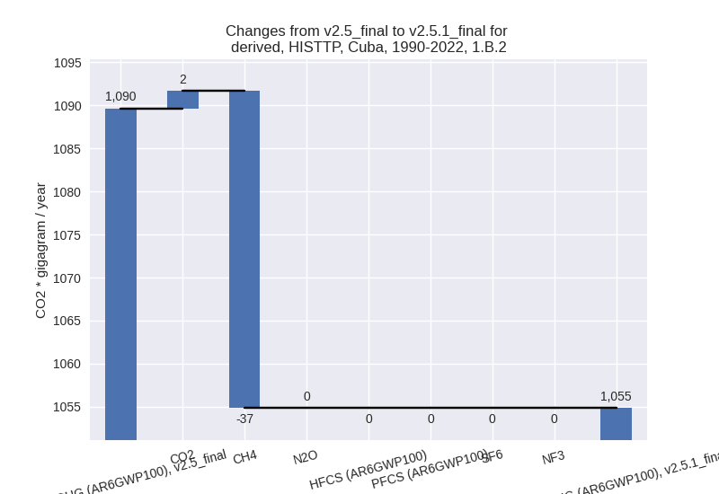
There is no subsector information available in PRIMAP-hist.
- 2: Total sectoral emissions in 2022 are 1552.25 Gg
CO2 / year which is 3.9% of M.0.EL emissions. 2022 Emissions have
changed by -0.6% (-9.30 Gg CO2 /
year). 1990-2022 Emissions have changed by -3.2% (-62.44 Gg CO2 / year). For
1990-2022 the changes per gas
are:
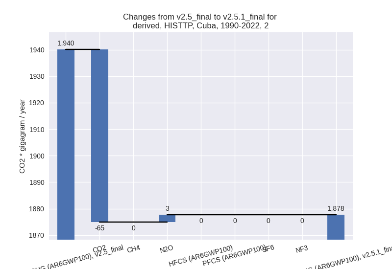
- M.AG: Total sectoral emissions in 2022 are 10020.02
Gg CO2 / year which is 25.2% of M.0.EL emissions. 2022 Emissions have
changed by -7.6% (-819.01 Gg CO2 /
year). 1990-2022 Emissions have changed by 0.3% (35.98 Gg CO2 / year). For 2022 the
changes per gas
are:
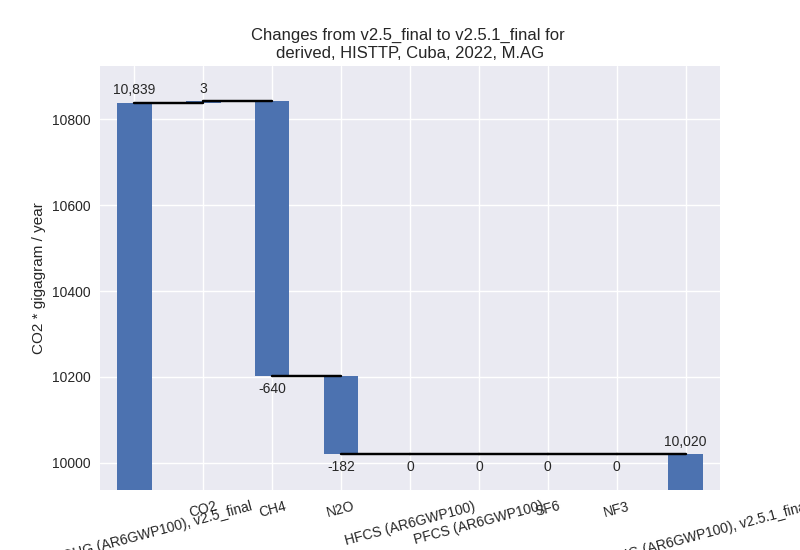
The changes come from the following subsectors:
- 3.A: Total sectoral emissions in 2022 are 6951.08
Gg CO2 / year which is 69.4% of category M.AG emissions. 2022 Emissions
have changed by -5.9% (-435.89 Gg
CO2 / year). 1990-2022 Emissions have changed by -0.2% (-12.21 Gg CO2 / year). For 2022 the
changes per gas
are:
There is no subsector information available in PRIMAP-hist.
- M.AG.ELV: Total sectoral emissions in 2022 are
3068.94 Gg CO2 / year which is 30.6% of category M.AG emissions. 2022
Emissions have changed by -11.1%
(-383.12 Gg CO2 / year). 1990-2022 Emissions have changed by 1.1% (48.19 Gg CO2 / year). For 2022 the
changes per gas
are:
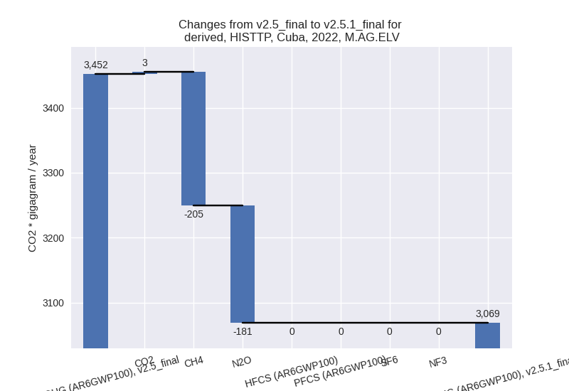
There is no subsector information available in PRIMAP-hist.
- 4: Total sectoral emissions in 2022 are 5889.11 Gg
CO2 / year which is 14.8% of M.0.EL emissions. 2022 Emissions have
changed by 0.1% (7.72 Gg CO2 /
year). 1990-2022 Emissions have changed by 0.0% (0.23 Gg CO2 / year).
- 5: Total sectoral emissions in 2022 are 187.10 Gg
CO2 / year which is 0.5% of M.0.EL emissions. 2022 Emissions have
changed by 2.9% (5.22 Gg CO2 /
year). 1990-2022 Emissions have changed by 0.1% (0.16 Gg CO2 / year). For 2022 the
changes per gas
are: